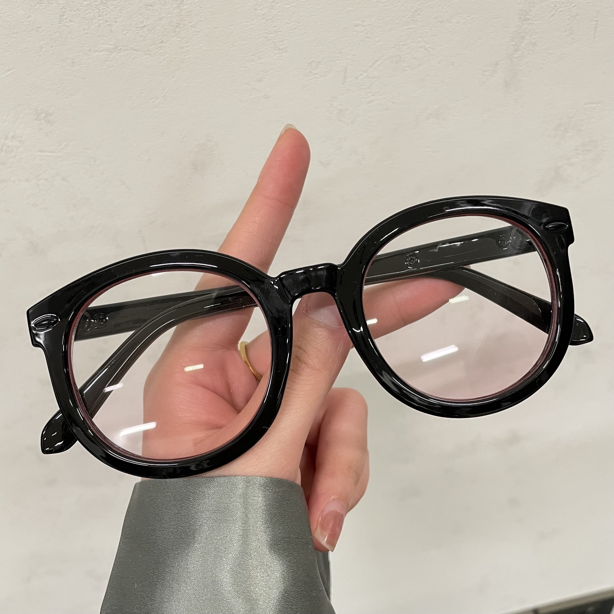

Teardown 06
自带腮红效果的眼镜

用户
素颜、不爱化妆的女生；日常需要佩戴框架眼镜，希望快速提升面部气色，不想花时间涂腮红。
场景
日常通勤、出门逛街；素颜出行，本身就要戴眼镜，额外化妆觉得麻烦。
当前方案痛点
- 素颜面部苍白，缺少红润气色；
- 手动涂腮红操作麻烦，容易下手过重、脱妆；
- 框架眼镜的镜框会挡住一部分腮红，化妆的效果大打折扣。
创意方案
镜片下半区域做淡淡的粉色渐变。戴上眼镜之后，透过镜片看脸颊位置，自带一层柔和的红润感，不需要涂抹腮红，戴上眼镜就拥有腮红妆效。眼镜本身是刚需用品，直接把美妆效果集成在镜片上。
核心价值
复用用户本来就要使用的物品，不增加额外操作步骤，一键获得美妆效果，降低懒人变美的门槛。
底层设计思想
在用户本来就要随身携带、必须使用的物品上，叠加额外功能，减少用户新增操作。
同思想延伸案例
- 带防晒功能的口罩
- 自带驱蚊效果的衣物
- 可以当充电宝的手机壳